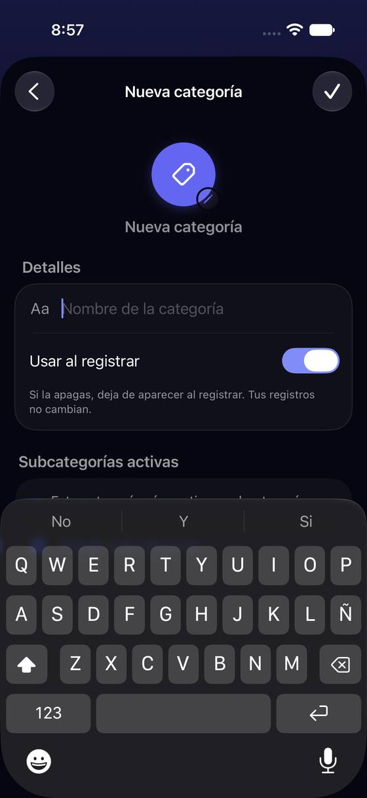
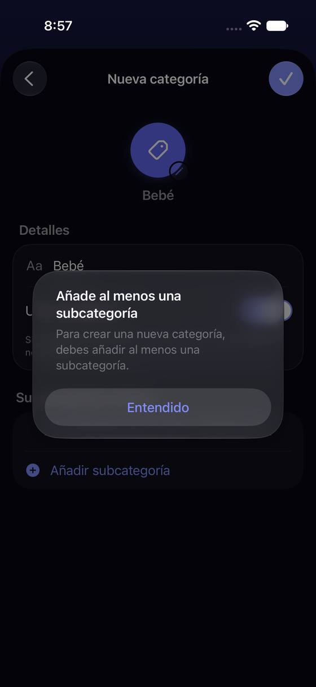
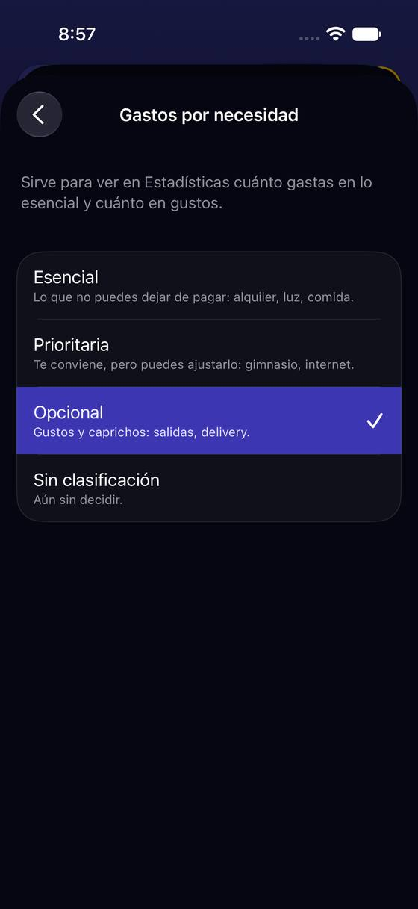

Crear una categoría falla al final: pide una subcategoría solo después de tocar Guardar
Hoy
Capturas del simulador (app de origin/2.3, semillas de prueba). Pasos hoy: 12 toques y una alerta (3 subcategorías)




De dónde sale
- Captura Capturas k06-k08 y k05 (semilla «sin-registros»).
- Código La alerta:
CategoryDetailView.saveCategory(líneas 515-520); Guardar solo mira el nombre (viewModel.canSave). - Código «+» crea e inserta la categoría vacía antes de escribir nada (
CategoriesSettingsListViewModel.createAndOpenNewCategory, líneas 98-118); al guardar la primera subcategoría se guarda el contexto entero (SubcategoryDetailView.saveSubcategory, línea 393).
Las opciones
De 3 a 5 alternativas con el mismo caso. Desliza cada recorrido; el anillo cian marca dónde toca Lucía.
La primera subcategoría, en la misma pantalla
«Nueva categoría» pide el nombre y, debajo, las subcategorías como filas que se escriben ahí mismo («+ Añadir otra»). Guardar se enciende cuando hay nombre y al menos una; si Lucía no quiere dividirla, «Sin dividir» crea una subcategoría «General» por ella.
A favor
- El error de hoy (alerta tras Guardar) no puede pasar: el botón dice cuándo está listo.
- Una pantalla en vez de tres; sin empujar otra para cada subcategoría.
- «Sin dividir» resuelve a quien no piensa en subcategorías.
En contra
- Necesidad, icono y «Usar al registrar» de cada subcategoría quedan para después (en su detalle, como hoy).
- Un formulario con filas que se añaden es más trabajo que el de hoy.
Una categoría puede nacer sin subcategorías
Guardar con solo el nombre funciona: Yala crea por dentro «General» y la categoría sale al registrar como una opción más. Las subcategorías se añaden cuando hagan falta.
A favor
- Lo más corto: nombre y Guardar.
- Quita el concepto de subcategoría a quien no lo necesita (P2).
En contra
- Una subcategoría «General» escondida es una regla nueva que explicar en informes y presupuestos.
- Si después añade subcategorías, ¿qué pasa con lo que ya está en «General»?
Guardar dice lo que falta, antes
Sin cambiar el recorrido: con nombre y sin subcategorías, el botón Guardar se queda apagado y la sección de subcategorías dice «Falta al menos una» en color, con «Añadir subcategoría» como botón.
A favor
- Barato.
- Se acaba la alerta que llega tarde.
En contra
- Siguen siendo tres pantallas por subcategoría.
- Sigue exigiendo entender qué es una subcategoría.
Sugerencias de subcategorías al escribir el nombre
Al escribir «Bebé», Yala propone subcategorías típicas como chips (Pañales, Ropa, Salud, Guardería) que se eligen con un toque; también se escribe una propia.
A favor
- Lo más rápido para nombres comunes.
- Enseña qué es una subcategoría con ejemplos.
En contra
- Necesita una lista de sugerencias por nombre en 16 idiomas (o pedirlas a la IA, que es Pro).
- Para nombres raros no ayuda.
Lado a lado
La última pantalla de cada recorrido, frente a hoy.
Comparación
| Opción | Pasos para el caso (maqueta) | Esfuerzo | Riesgo | Reabre |
|---|---|---|---|---|
| Hoy | 12 toques y una alerta (3 subcategorías) | — | — | — |
| C1 · La primera subcategoría, en la misma pantalla | 7 toques para «Bebé» con 3 subcategorías (hoy: 12 y una alerta) | medio | bajo | — |
| C2 · Una categoría puede nacer sin subcategorías | 4 toques | medio | medio | — |
| C3 · Guardar dice lo que falta, antes | 11 toques sin alerta (hoy: 12 y una alerta) | bajo | bajo | — |
| C4 · Sugerencias de subcategorías al escribir el nombre | 5 toques | alto | medio | — |
Lente de perfiles
Perfiles simulados, no entrevistas Los siete perfiles de la revisión del usuario nuevo, usados como lentes. riesgo alto de trabarse · medio · bajo.
| Perfil | Hoy | C1 | C2 | C3 | C4 |
|---|---|---|---|---|---|
| P1 · Migrante de Excel | lento | teclea su lista | quiere su detalle | lento | — |
| P2 · Principiante abrumado | no sabe qué es una subcategoría | sabe qué falta | lo más simple | entiende qué falta | ejemplos |
| P3 · Anotador rápido que no lee | alerta | rápido | — | muchos toques | rápido |
| P4 · Experto de otra app | lo resuelve | — | regla oculta | — | — |
| P5 · Llega por una invitación de grupo | — | — | — | — | — |
| P6 · Varias monedas y tarjeta | — | — | — | — | — |
| P7 · Texto grande, a veces en iPad | tres pantallas | filas que crecen | — | — | chips pequeños |
Recomendación: C1
Resuelve el error de raíz (el botón dice cuándo está lista) y baja de tres pantallas a una, sin inventar reglas ocultas como C2. C3 es el paso barato si C1 tiene que esperar; C4 se puede sumar después encima de C1.
Qué decide Jürgen
- ¿Nueva categoría con sus subcategorías en la misma pantalla (C1)?
- ¿Se permite una categoría sin dividir (C1 con «Sin dividir», o C2)?
Revisión por vistas 2.3 · Cuentas, tarjetas, categorías, etiquetas y divisas. Maquetas en HTML con datos ficticios: no son la app. Pasos contados sobre las maquetas; los de «Hoy», en el simulador o en el código citado.